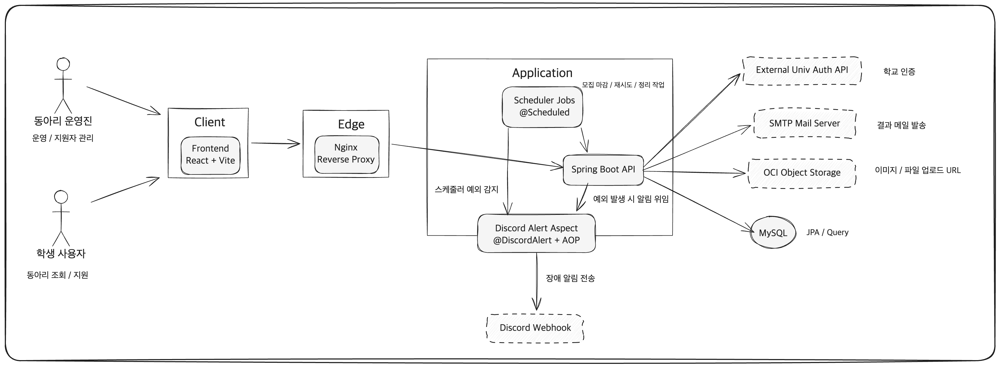
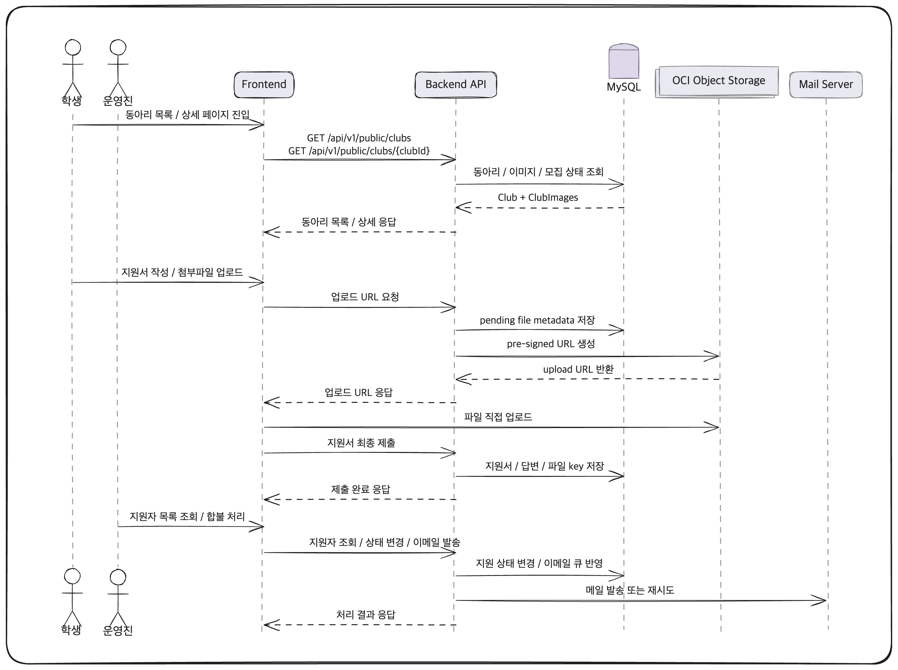
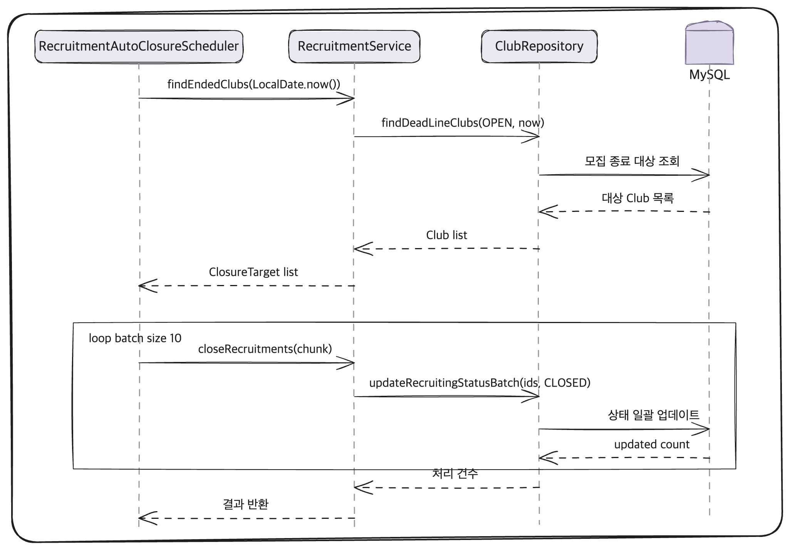
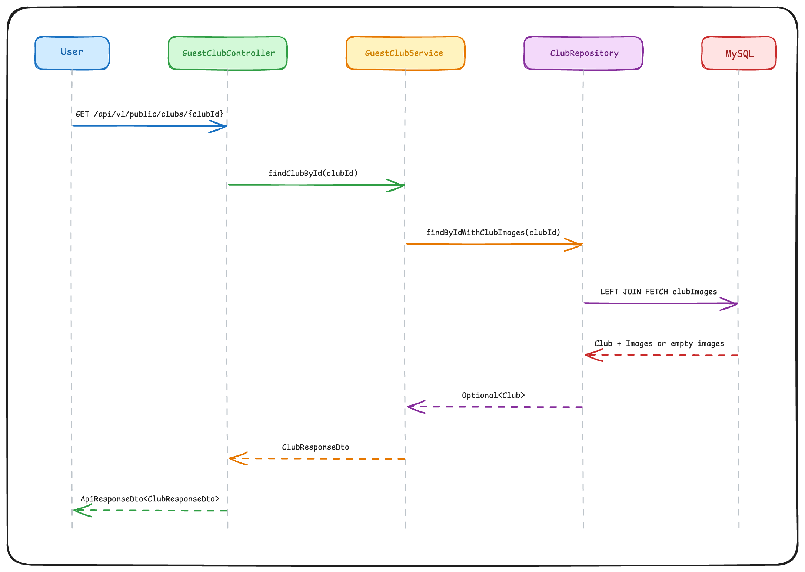
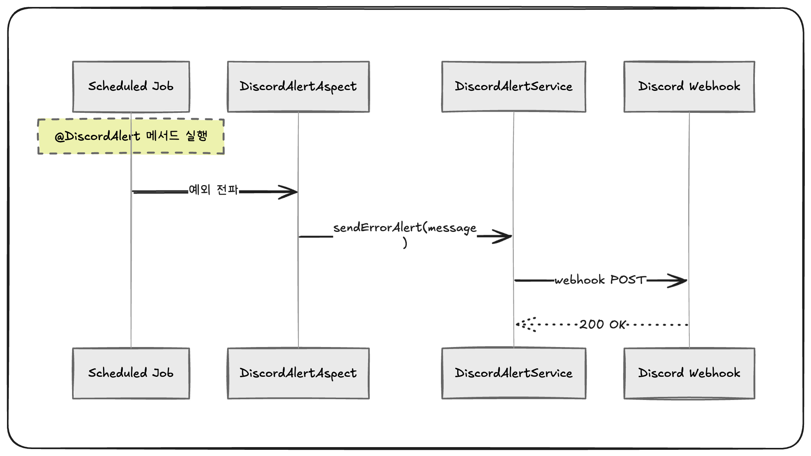

동아리 관리 및 지원 플랫폼
SMU-CLUB
상명대학교 학생을 위한 동아리 탐색, 지원, 운영 관리 플랫폼으로, 운영 안정성 개선과 배치 처리 구조 재설계를 중심으로 정리한 프로젝트 포트폴리오이다.
React + Vite
Spring Boot
JPA
MySQL
Nginx
Docker Compose
OCI Object Storage
Discord Webhook
Scheduler
프로젝트 개요
SMU-CLUB은 학생이 다양한 동아리를 탐색하고 지원할 수 있도록 지원하며, 운영진은 동아리 소개 관리, 모집 상태 전환, 지원자 조회, 결과 통보, 파일 업로드 등의 운영 업무를 하나의 서비스에서 처리할 수 있도록 설계한 플랫폼이다.
핵심 개선 사항
- 스케줄러 실패를 운영자가 즉시 감지할 수 있도록 알림 체계를 개선했다.
- 배치성 작업의 트랜잭션 범위를 재설계해 실패 전파 범위를 줄였다.
- JPA Fetch Join으로 인한 조회 누락 문제를 해결했다.
- API 응답 포맷을 표준화해 프론트엔드 협업 비용을 낮췄다.
운영 관점 의사결정
서비스 운영 과정에서 외부 인증 의존 구조의 리스크를 검토하고, 학교 관계자들과의 협의 이후 운영진 계정 로그인과 일반 지원자 비로그인 지원 구조로의 전환 방향을 주도적으로 정리했다.
제출 포인트
- 배치 작업의 운영 안정성 확보 경험
- 문제 발견 이후 구조적 개선까지 연결한 경험
- 기술 구현과 협업 효율화를 함께 고려한 경험
- 운영 리스크를 인지하고 서비스 방향을 조정한 경험
Architecture & Flow
서비스 구조와 주요 데이터 흐름을 시각화하여, 사용자 요청이 어떤 방식으로 백엔드와 외부 시스템으로 연결되는지 정리했다.
Architecture Diagram

Data Flow Diagram

Sequence Diagram
주요 시나리오를 기준으로 배치 처리, 상세 조회, 스케줄러 장애 감지 흐름을 분리해 정리했다.
모집 자동 마감 시퀀스

동아리 상세 조회 시퀀스

스케줄러 장애 알림 시퀀스

문제 해결 사례
프로젝트 진행 과정에서 운영 안정성, 데이터 조회 정확성, 협업 효율 측면에서 발견한 문제를 문제-해결-결과 순서로 정리했다.
스케줄러가 실패해도 운영자가 즉시 인지하기 어려웠다
문제
이 프로젝트에는 모집 기간 종료 시 자동 마감, 이메일 재전송, 만료된 동아리 회원 정리, OCI 고아 파일 정리와 같이 사용자가 직접 호출하지 않는 배치성 작업이 다수 존재한다.
초기 구조에서는 스케줄러 실패가 로그에만 남거나 늦게 발견될 가능성이 컸다. 특히 스케줄러는 API 요청과 달리 사용자가 즉시 오류를 체감하지 않기 때문에, 실패가 발생해도 운영 측에서 사후적으로 인지하는 문제가 있었다.
해결
스케줄러 메서드에 @DiscordAlert 커스텀 어노테이션을 붙이고,
DiscordAlertAspect에서 @AfterThrowing으로 예외를 감지해
DiscordAlertService가 Discord Webhook으로 장애 알림을 보내는 구조를 적용했다.
- 예외 감지 책임을 비즈니스 로직에서 분리
- 알림 전송은
@Async로 실행해 메인 흐름 차단 방지 - 스케줄러별 중복 알림 코드를 공통 관심사로 정리
결과
- 배치 작업 장애를 외부 채널을 통해 신속하게 인지할 수 있게 되었다.
- 운영자가 로그를 별도로 확인하지 않아도 장애 상황을 즉시 파악할 수 있게 되었다.
- 스케줄러 코드에서 알림 관련 중복 로직이 줄어 유지보수성이 향상되었다.
단일 트랜잭션 배치는 일부 실패가 전체 실패로 확산되기 쉬웠다
문제
배치 작업을 하나의 큰 트랜잭션으로 처리할 경우 일부 데이터 처리 실패가 전체 롤백으로 이어질 수 있고, 락 점유 시간이 길어져 운영 중 충돌 가능성이 커진다. 또한 어느 데이터에서 실패했는지 추적이 어렵고, 재처리 범위가 불필요하게 커지는 문제가 있었다.
이 문제는 모집 자동 마감과 이메일 재전송처럼 여러 건을 독립적으로 처리할 수 있는 작업에서 특히 두드러졌다.
해결
트랜잭션 범위를 배치 특성에 맞게 분리해 조회는 가볍게 수행하고, 실제 변경 작업은 작은 단위로 분리하는 방식으로 구조를 재설계했다.
- 모집 자동 마감은 종료 대상 조회 후
BATCH_SIZE = 10단위로 청크 분할 closeRecruitments()를REQUIRES_NEW트랜잭션으로 처리- 이메일 재전송은 각 항목을
processSingleTask()에서 독립 트랜잭션으로 처리 - 성공 시 상태 반영, 실패 시 백오프 및 포기 처리를 개별 단위로 관리
결과
- 일부 실패가 전체 배치를 무효화하지 않도록 개선했다.
- 배치 처리 중 어느 구간에서 실패했는지 파악하기 쉬워졌다.
- 운영 환경에서 재시도와 장애 복구 절차가 한층 단순해졌다.
- 긴 단일 트랜잭션의 부담을 줄여 안정성을 높였다.
JPA Fetch Join 사용 시 연관 데이터가 없으면 부모 엔티티가 조회 결과에서 누락되었다
문제
동아리 상세 조회에서는 동아리 기본 정보와 이미지 목록을 함께 내려줘야 했다. 그러나 연관된 이미지가 없는 동아리의 경우, Fetch Join 전략에 따라 부모 엔티티 자체가 조회 결과에서 누락될 수 있었다.
서비스 관점에서는 존재하는 동아리임에도 조회되지 않는 현상으로 나타났으며, 이는 단순한 데이터 부재와는 다른 성격의 버그였다.
해결
상세 조회 쿼리를 LEFT JOIN FETCH로 변경해,
연관 엔티티가 없어도 부모 엔티티는 반드시 조회되도록 수정했다.
@Query("SELECT c FROM Club c LEFT JOIN FETCH c.clubImages WHERE c.id = :clubId")
Optional<Club> findByIdWithClubImages(Long clubId);핵심은 이미지가 없더라도 동아리 상세는 보여야 한다는 기능 요구사항을 조인 전략에 정확히 반영하는 것이었다.
결과
- 이미지가 없는 동아리도 정상적으로 상세 조회가 가능해졌다.
- 데이터 부재와 조회 누락을 혼동하지 않도록 개선했다.
- JPA 조인 전략을 요구사항 기준으로 선택해야 한다는 기준을 팀 내에 공유할 수 있었다.
API 응답 형식이 제각각이면 프론트엔드에 불필요한 방어 코드가 증가한다
문제
초기에는 API마다 응답 구조와 메시지 해석 방식이 달라질 수 있었고, 프론트엔드는 엔드포인트별로 별도의 분기 처리를 작성해야 했다. 이러한 구조는 협업 비용을 높이고, 프론트엔드가 비즈니스 로직보다 예외 대응 코드에 더 많은 시간을 투입하게 만든다.
해결
ApiResponseDto<T>를 중심으로 응답 포맷을 통일하고,
동아리 목록과 상세 응답의 구조를 일관되게 정리해 프론트엔드가 동일한 방식으로 응답을 해석할 수 있도록 구성했다.
- 공통 응답 필드:
status,message,data,errorCode - 성공/실패 응답 생성 방식 표준화
- 목록/상세 API의 응답 형태와 메시지 해석 방식을 일관되게 정리
- 프론트엔드가 엔드포인트별 예외 분기를 최소화할 수 있도록 응답 계약을 명확히 정리
결과
- 프론트엔드가 API별 예외 케이스를 줄일 수 있게 되었다.
- 응답 해석 방식이 통일되어 협업 효율이 향상되었다.
- 프론트엔드와 백엔드 간 응답 계약이 명확해져 유지보수성이 향상되었다.
결과적으로 얻은 개선점
구현 단위의 수정에 그치지 않고, 운영 안정성, 데이터 접근 안정성, 협업 생산성, 서비스 운영 의사결정까지 연결되는 개선 효과를 만들었다.
운영 안정성
- 스케줄러 장애 감지 체계를 외부 알림 채널로 확장했다.
- 배치 작업을 청크 단위 및 건별 처리로 분리해 장애 전파 범위를 줄였다.
- 이메일 재전송, 파일 정리와 같은 운영성 기능을 서비스 구조에 통합했다.
데이터 접근 안정성
- JPA 조인 전략을 기능 요구사항에 맞게 재설계했다.
- 대량 상태 변경을 배치 업데이트로 처리해 불필요한 엔티티 반복 수정을 줄였다.
협업 생산성
- API 응답 구조를 표준화해 프론트엔드 대응 비용을 줄였다.
- 프론트엔드와 백엔드 간의 응답 계약을 명확하게 정리했다.
서비스 운영 관점의 의사결정
- 외부 인증 의존 구조의 운영 리스크를 검토했다.
- 학교 관계자들과의 협의 결과를 반영해 서비스 구조 변경 방향을 정리했다.
- 운영진과 일반 지원자의 사용 맥락을 분리해 접근성과 운영 현실성을 함께 고려했다.